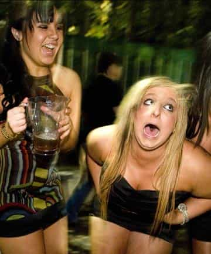
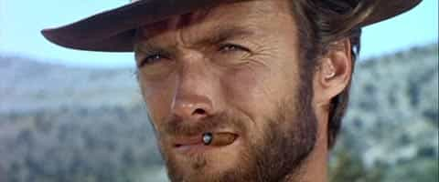
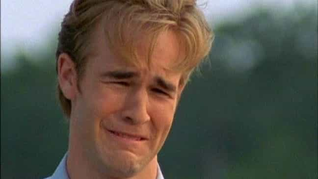
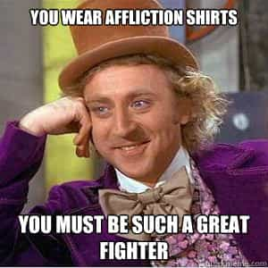
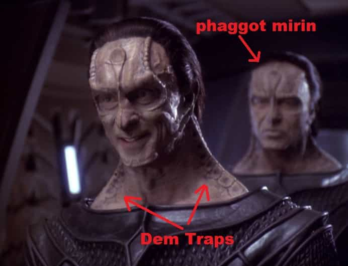
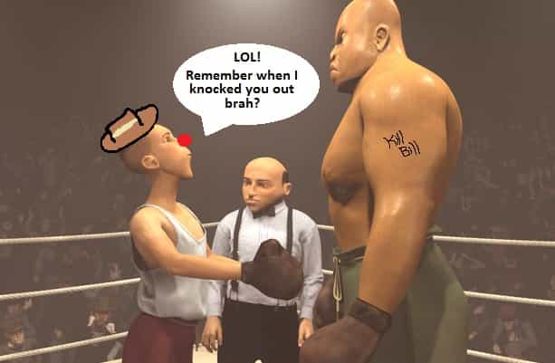

< < < Back
3 Manly Moments From My Life That Are Total Shams – Return Of Kings
Occasionally, a certain confluence of events will transpire in a man’s life which creates one perfect moment of manliness which forever defines or accentuates his character. If he is truly unfortunate, this event goes unseen by everyone. If, however, he has the good grace to have witnesses to his manly deed, then he can often sit back and let the natural tendency of human nature toward exaggeration create a mythos about him.
It’s odd really, how humans love to overhype and over blow what are often simple events. Frank goes hunting with Jesse, Frank lucks out and brings down a twelve point Buck with a single head shot, and later Jesse’s liable to recount the story as: “The damn beast was charging right at Frank, antlers lowered, death and all of hell it its soulless eyes. Frank though, he just swings his rifle up … not even aiming … and puts one dead center in Bambi’s forehead. Damn thing skids to a halt about a foot from Frank’s big toe. Had ta have been at least twenty … NO! Twenty-four points!”
There’s not really much wrong with this, even if the story does become silly and nigh unbelievable. I’ve just always found it amusing to hear such tales recounted when I know the truth of the details. A woman who banged a friend of mine told a gal pal that he had an above average sized penis. Then the friend went and told everyone else that her friend told her that he was packing eight inches and soon everyone in our circle was razzing our pal about his ten inch meat hammer. I’ve played hockey with the guy. I am shamefully well aware of what he’s working with, but I don’t dissuade the myth. It’d be a dick move, and hey, if you’re going to have some kind of stereotype assigned to you an exaggeration of your penis size is definitely one of the better ones to have. It’s just funny how people, some of whom know the truth, prefer a story to the reality.
I’m going to share with you now three examples of myths about myself shared amongst my friends, including both the exaggerations and the realities of each one. Try not to get too bored.
My First Threesome
I had my fair share of sex during my university years, especially during the first one when the excitement of being out on my own for the first time mixed in with the lack of standards that come with not knowing what is and isn’t quality poonanny. By my second year I had a fairly good grasp on what my sexual market value is so while the quantity went down the quality went up.
But I wasn’t in my second year when, after a wicked New Years party, I charmed two chicks so much that when I jokingly suggested they both come back to my dorm room they shrugged and actually decided to. I was surprised, much like the other people within hearing distance. I remember how shocked their faces were when the girls and I left for my residence.
I was still unsure if the girls actually intended to go through with it when we reached my room. I assumed that they’d flake out once we were inside…or worse, make out with me a little and then pass out in my bed instead. At that point I was basically expecting, as a best case scenario, that one would flake out and the other would stay for some fun.
The Reality
Yes. I had the threesome. And you’re probably (not) thinking, hey! Right on Billy! Good for you brah! Well the truth of it is that my first threesome didn’t happen exactly as I’d always fantasized. The ladies involved looked less like this:
and a lot more like this:

My first (and thus far, only) threesome was with two slightly chunky and very, very drunk girls. And it was awkward as hell. I had no idea what I was doing and neither did they. I absolutely failed at arranging and juggling them. There was no rhythm or tempo to anything we were attempting to do. It was like I had been shoved in front of one of the world’s premiere orchestras as a conductor after only having had five minutes to skim Conducting For Dummies. None of us had a good time. At one point one of the girls was sitting on the corner of the bed, just watching me and the other one with one of the most unsettling stares I’ve ever been subjected to.
To this day I still wonder how I actually managed to stay at full mast the whole time.
When we attempted the classic tripod position I was nearly choked out. The heftier girl sat down too far and forward on my face and smothered my mouth and plugged up my nose. It felt like being a water boarding victim in some weird Abu Ghraib porn parody. I was squirming underneath her, awkwardly blowing raspberries in a dual attempt to please and breathe. Down on the other end, it felt like the other girl was having the world’s laziest epileptic fit on my Johnson. I had just wanted the whole thing to end long before that point and boy, was I ever happy when the ordeal finally was over. I’m pretty sure it was the first sex I’ve ever had were I was happier it was over then that I’d had it.
Of course, the rest of the dorm never saw how unsatisfying and how utterly unsexy the threesome was, and most of those who heard the retelling did not get to see the low quality of the girls. And thus a terrible night of sex with two women you couldn’t pay me nowadays to touch created a legend of a sexual Casanova in the dorms.
The Time I Had A Gun Pulled On Me
Growing up in my hometown was a bit like being in The Outsiders, except instead of me, Patrick Swayze and Matt Dillon rumbling with rich white kids, me and my friends ambushed and beat up brown kids. If it sounds bad, don’t worry, they did the same thing to us.
Anyways, one day in junior high—I was in grade eight I think—a couple of Indians we knew from school (the woo woo kind, not the forehead dot ones) were hanging around my friend’s neighbourhood. Since there were only four of them and seven of us, we courageously ran outside and began attacking them with hockey sticks. We only managed to get in a few good hits before they ran off. Another victory for Les Nationals!
A few hours later we all headed home. I and two other kids lived on the same street a few blocks over so we were walking together when a rusty old Chevrolet screeched to a halt on the road beside us. The Indians had returned. The back window rolled down and one of them leaned out with a handgun. The other two kids with me did the smart thing and ran off immediately. I was frozen in place.
Of course my ‘friends’ who ran off fled only so far as to find a safe hiding place to watch from. What they saw was me standing beside the car talking to the Indian, with the handgun pointed squarely at myself the whole time, before he eventually ducked back inside the car and it sped off. My friends then bragged about how I (and themselves, in some versions of the story) stared down some punk natives even though they had a handgun (sawn off shotgun in later re-tellings) pointed at us. Freakin’ badass right?
The Reality
From afar, maybe I did look like Clint Eastwood.

Up close I looked a lot more like this:

I was scared shitless. I couldn’t even think about how I was about to die. Honestly, I don’t remember being able to think anything. The suddenness of the Indian whipping the gun out on me made me chomped down so hard from fear that I actually chipped a tooth (my lower left 1st molar for all five of you interested in that detail). He asked me if I wanted to die. I squeaked out a lot of begging no’s; my voice was already screechy from being in the midst of puberty and it only sounded more pathetic from my rapid fire pleading. I was about to get down on my knees and actually physically beg them to not shoot me when the Indians decided to drive away.
So far from being a stoic, steely eyed bad ass staring down my potential killer, I was a quivering and laughable mess who nearly soiled himself… and I do mean nearly. After the whole affair I found the front of my gonch was wet. I’d like to say it was just from sweat, but I’m pretty sure I pissed a little. Thankfully, that little detail didn’t make it into the Billy Bible.
Oh, and to top it all off, a week later I found out that it wasn’t even a real handgun. It was a BB handgun. In my own defence, five or six hundred shots from that bad boy might have killed me, so I was probably in the right by being scared for my life.
I Knocked Out A Professional Boxer
I worked as a bouncer during university. The job was supposed to help alleviate my student debt, but most of my paycheques went to booze, drugs and pizza.
It was my first month at the job on a very busy Saturday night. I was standing watch in a fairly solitary spot overlooking the dance floor. There were other bouncers within visual range, including one on the balcony above me, and the whole team was just a radio call away, but for the most part I was entirely in charge of that little slice of the club. I had been at the job long enough to get a good feel on who was potential trouble and my eyes were soon drawn to a roidhead in an Affliction tee. He was making quite a presence of himself on the dance floor, bumping into people, puffing his chest out at any guy who dared complain about it. I knew he was a fight waiting to happen.

Not too long after I first spotted roid-o, some scrawny little farmer looking kid accidentally bumped into him. Words were exchanged, roid-o puffed out, and surprisingly enough scrawny bro stood his ground and made his own feelings known by flipping the bird. Roid-o moved in on him but by that time I had already hopped down into the dance floor. I stepped between them, telling roid-o to relax. One of the other bouncers watching from a perch above us saw roid-o push me and start a fight with me. The bouncer then saw me snap a punch at roid-o and knock him out with one hit. By this time the bouncer above me had called all the security to the dance floor, and within a minute we had a circle cleared out around the still dazed roid-o. The other bouncers shooed me off, standard operating procedure to avoid further aggravating the victim of our aggression.
I was summoned to the boss’s office when the club shut down for the night. Other bouncers were already in there, watching security camera footage. On the crappy camera you could see me jump into the dance floor, roid-o get in my face, and then in a few seconds the dancers around us spread out as I knocked roid-o to the ground.
“Do you know who that was?” my boss asked me.
I didn’t. Nor did I care, though I was afraid that I had knocked out his nephew or someone other bouncer’s brother. It turned out roid-o was well known by others at the club. He was also supposedly a professional boxer, one of the best in the province. So for the remainder of my employment at the club I was known as the guy who fought and knocked out an actual boxer with one hit.
The Reality
After I had jumped down into the dance floor and told roid-o to relax, he told me to go and fornicate myself. Confused and, I freely admit, very intimidated by his attitude, I pointed to the club’s logo on my shirt, identified myself as security and again told him to relax. I recall really, really hoping he’d take that advice (remember, I was all alone at this point and I had no desire to fight a guy with bigger traps than a Cardassian from Star Trek).

Obviously he didn’t take the advice.
Roid-o tried to push past me to get at scrawny bro and I shoved him back. His hands started to come up and I swung out immediately. It was, to my own credit, a solid sucker punch. There was no squaring off, he threw no punches, and his attention was completely focused on scrawny bro behind me. My hit caught roid-o square on the sweet spot on his chin and he went down limp probably without having even realized he was in a fight. Roid-o was also a regular that I had never noticed before, and when I did afterward I also noticed that he drank profusely when at the club. In hindsight, I have no doubt that he was already ten or eleven beers deep that night and was practically pre-knocked out before I tapped him.
Plus roid-o wasn’t a professional boxer. He was in a barely legitimate league. At best he could be called semi-pro and he never wound up going anywhere, languishing as just another lower mid-tier fighter wannabe in a bush league who expired in his early 20s and decided to cope by spending the remainder of his glory years getting way too drunk at a club and trying to pick fights with guys who are half his weight. If I sound a little bitter there, I am. Roid-o challenged me to fight in the ring many-a-time after that night and I made a point of never taking him up on the offer. Because I know he’d have slaughtered me.

So in the future, when you hear a story about a manly man doing manly things, look at it with an objective eye. Odds are what really happened is a lot more mundane and sort of pathetic than the story that gets solidified afterward. But hey, some men need their legends I suppose.
Not that I’m saying I’m a legend* or anything.
*Though I am a legend. Just ask my friends, they’ll tell you.
Read More: 13 Things Men Should Be Shamed For, Not Celebrated


{kind=link}
{kind=link}
{kind=link}
{kind=link}
{kind=link}
{kind=link}
{kind=link}
{kind=link}